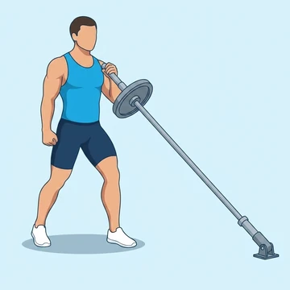

One-Arm Landmine Press
A unilateral overhead press variation using a landmine setup that follows a natural arc, reducing shoulder impingement risk while building pressing strength.
Shoulders · Barbell · Intermediate


Muscles worked by the One-Arm Landmine Press
Primary
Secondary
Also called: front deltoid, anterior delt, front delt, anterior deltoid, pec, pecs.
Equipment
Also called: bar, olympic barbell, straight bar, olympic bar, power bar.
How to do the One-Arm Landmine Press
- Anchor one end of a barbell in a landmine attachment and load the free end.
- Kneel on one knee or stand and grip the sleeve end at shoulder height with one hand.
- Press the bar upward and forward along its arc until the arm is fully extended.
- Lower the bar back to shoulder height under control.
- Complete all reps before switching sides.
Form tips
- Engage your core to prevent the torso from rotating toward the working arm.
- The arc motion is more joint-friendly than a vertical overhead press.
- Kneeling on the opposite knee increases core anti-rotation demand.
At a glance
| Body part | Shoulders |
|---|---|
| Category | Strength |
| Force type | Push |
| Mechanic | Compound |
| Difficulty | Intermediate |
| Equipment | Barbell |
| Goals | Hypertrophy, Strength |
| Tags | Shoulder focus, Push day |
| MET | 6.0 (metabolic equivalent, for calorie estimates) |
| Unilateral | Yes |
| Bodyweight | No |
| Dataset id | one-arm-landmine-press |
One-Arm Landmine Press in German & Spanish
| German | Einarmiger Landmine Press |
|---|---|
| Spanish | Press Landmine con Un Brazo |
Descriptions, instructions and tips ship in all three languages in the JSON.
Related exercises
Exercise data (JSON)
The record below is exactly what exercises.json ships for this exercise — names, descriptions, instructions and tips in English, German and Spanish.
{
"id": "one-arm-landmine-press",
"name_en": "One-Arm Landmine Press",
"name_de": "Einarmiger Landmine Press",
"name_es": "Press Landmine con Un Brazo",
"description_en": "A unilateral overhead press variation using a landmine setup that follows a natural arc, reducing shoulder impingement risk while building pressing strength.",
"description_de": "Eine einseitige Überkopfdrückübung am Landmine-Aufsatz mit natürlichem Bewegungsbogen, der das Schulterimpingement-Risiko verringert.",
"description_es": "Una variante de press sobre la cabeza unilateral con montaje landmine que sigue un arco natural, reduciendo el riesgo de impingement de hombro.",
"category": "strength",
"force_type": "push",
"mechanic": "compound",
"difficulty": "intermediate",
"equipment": "barbell",
"body_part": "shoulders",
"primary_muscles": [
"anterior_deltoid",
"pectoralis_major"
],
"secondary_muscles": [
"obliques",
"serratus_anterior",
"triceps_brachii"
],
"goals": [
"hypertrophy",
"strength"
],
"tags": [
"shoulder_focus",
"push_day"
],
"is_unilateral": true,
"is_bodyweight": false,
"instructions_en": [
"Anchor one end of a barbell in a landmine attachment and load the free end.",
"Kneel on one knee or stand and grip the sleeve end at shoulder height with one hand.",
"Press the bar upward and forward along its arc until the arm is fully extended.",
"Lower the bar back to shoulder height under control.",
"Complete all reps before switching sides."
],
"instructions_de": [
"Ein Ende der Langhantel im Landmine-Aufsatz verankern und das freie Ende belasten.",
"Im Kniestand oder Stand das freie Ende auf Schulterhöhe mit einer Hand greifen.",
"Die Stange entlang ihres Bogens nach oben und vorne drücken, bis der Arm gestreckt ist.",
"Stange kontrolliert zur Schulter zurückführen.",
"Alle Wiederholungen ausführen, dann Seite wechseln."
],
"instructions_es": [
"Ancla un extremo de la barra en el accesorio landmine y carga el extremo libre.",
"Arrodíllate en una rodilla o párate y sujeta el extremo libre a la altura del hombro con una mano.",
"Empuja la barra hacia arriba y adelante siguiendo su arco hasta extender completamente el brazo.",
"Baja la barra de regreso a la altura del hombro con control.",
"Completa todas las repeticiones antes de cambiar de lado."
],
"tips_en": [
"Engage your core to prevent the torso from rotating toward the working arm.",
"The arc motion is more joint-friendly than a vertical overhead press.",
"Kneeling on the opposite knee increases core anti-rotation demand."
],
"tips_de": [
"Rumpf stabilisieren, um Rotationen des Oberkörpers zur Arbeitsseite zu verhindern.",
"Der Bogenbewegung ist gelenkschonender als ein vertikaler Overhead Press.",
"Kniestand auf dem gegenüberliegenden Knie erhöht die Anti-Rotationsanforderung."
],
"tips_es": [
"Activa el core para evitar que el torso rote hacia el brazo de trabajo.",
"El movimiento en arco es más amigable para las articulaciones que un press estricto.",
"Arrodillarse en la rodilla contraria aumenta la demanda antirotacional del core."
],
"met": 6.0,
"images": {
"flat": {
"start": "images/flat/one-arm-landmine-press-start.webp",
"peak": "images/flat/one-arm-landmine-press-peak.webp"
}
}
}Fetch just this exercise
const { exercises } = await fetch(
"https://exercise-dataset.com/exercises.json"
).then(r => r.json());
const ex = exercises.find(e => e.id === "one-arm-landmine-press");Free for personal and commercial in-app use with attribution (“Exercise data by RepDB”) — see the license and ready-made attribution snippets. Redistributing the data as a dataset or API is not permitted.